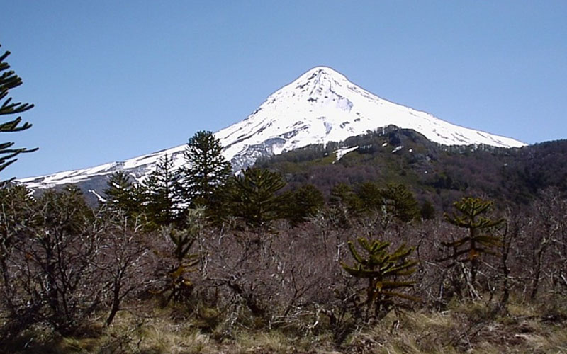

El Palmar - foto: SIB
Loro hablador - foto: SIB
Parque Interjurisdiccional Marino Isla Pingüino - foto: SIB Lida Pimper
Ciervo de los pantanos - foto: SIB Gonzalo Alves

Parque Nacional Lanin - foto: SIB Hernán Pastore
Parque Nacional Mburucuya - foto: SIB A. Guzmán